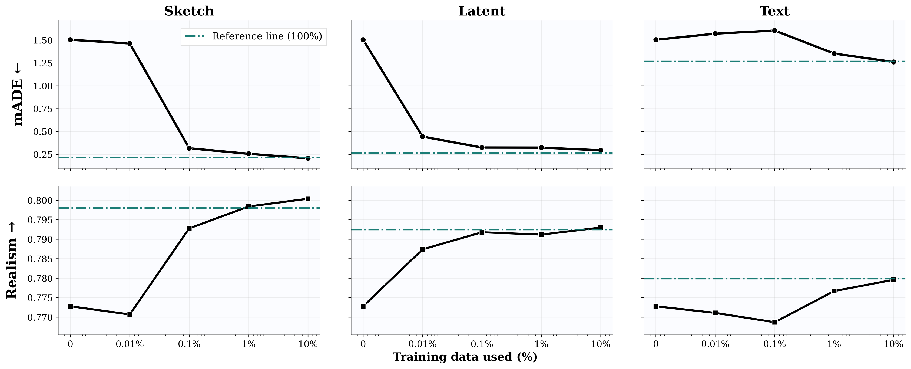
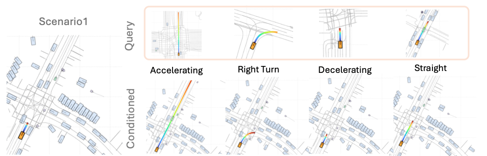

Three ways to specify behavior: sketch a path, transfer a reference behavior through a latent code, or describe an intent in text.
Abstract
Controllable traffic simulation is critical for testing autonomous driving systems, yet existing approaches often require retraining large generative models with extensive annotated data. We introduce a lightweight control adaptation framework that enables multi-modal controllability (sketch, latent behavior codes, and text) for pretrained state-of-the-art diffusion and autoregressive traffic models.
By modulating intermediate features through identity-initialized FiLM layers, our method efficiently adds new control modalities while preserving the base model's generative prior. Evaluated on Waymo Open Sim Agents Challenge, our approach demonstrates strong controllability with less than 1% of the paired control data.
Through context-aware condition transfer, our framework enables counterfactual scenario generation and long-tail synthesis while maintaining stable closed-loop driving realism and safety. Our framework unlocks new possibilities for controllable traffic simulation, enabling targeted scenario generation through lightweight adaptation of pretrained generative models.
Video
Method Overview

Train the control branch; freeze the traffic backbone. The modality encoder and FiLM layers modulate intermediate features. Near-identity initialization keeps the model close to its pretrained behavior at the start of adaptation. Paper, Fig. 2.
How are behavior latents learned? BehaviorVAE details

BehaviorVAE encodes trajectories together with scene context into per-agent latent codes. It is trained separately on 10,000 WOMD scenarios; the paired-data percentages below refer to control-adapter training. Paper, Fig. 3.
Control across backbones
All control adapters below use 1% paired control data.
| Control | Trainable params | Meta ↑ | mADE (m) ↓ | mADE gain ↑ |
|---|---|---|---|---|
| VBD-CL Diffusion | ||||
| Unconditional | 12.3M | 0.7186 | 2.7223 | — |
| Sketch | 1.3M | 0.7432 | 0.9645 | 64.56% |
| Latent | 1.9M | 0.7440 | 0.9221 | 66.12% |
| Text | 1.9M | 0.7306 | 2.0005 | 26.51% |
| SMART-tiny-CLSFT Autoregressive | ||||
| Unconditional | 7.0M | 0.7728 | 1.5044 | — |
| Sketch | 2.1M | 0.7984 | 0.2561 | 82.97% |
| Latent | 1.4M | 0.7912 | 0.3238 | 78.48% |
| Text | 2.0M | 0.7767 | 1.3537 | 10.02% |
Reading the results. Meta measures distributional realism; mADE is the minimum average displacement error across sampled rollouts. Gain is the relative mADE reduction against each backbone's unconditional baseline. Bold marks the best accuracy and realism metrics within each backbone. Parameter counts are those reported for base-model training or control-adapter training, respectively.
Evaluation scope and data accounting
These are ground-truth-derived control evaluations on WOMD under WOSAC, not arbitrary-instruction success rates. The SMART sketch result uses Full-GT conditioning: all GT-valid agents receive controls. Under target-only conditioning, sketch mADE is 0.4602 m and Meta is 0.7898 (Table A2).
The 1% refers to paired data for adapter training (approximately 5,000 scenarios), excluding backbone pretraining and separate BehaviorVAE training. Transfer experiments below use the separate 10%-data SMART setting with decoding guidance described in Supplement E.1.
How much paired data is needed?
Latent control improves earliest; sketch and text benefit from more supervision.

Fig. 5 · Sample efficiency. SMART backbone; 0% is the unconditional baseline. The reference lines jointly train the control branch and backbone LoRA adapters using 100% data. Percentages on the curves describe paired control-adapter data. Open PDF · Paper discussion.
Comparison with ProSim 1% vs. 100% paired control data
| Method | Paired data | Meta ↑ | mADE (m) ↓ | mADE gain ↑ |
|---|---|---|---|---|
| Original ProSim | ||||
| Unconditional | — | 0.704 | 2.679 | — |
| Sketch | 100% | 0.749 | 1.099 | 58.96% |
| Text | 100% | 0.709 | 2.330 | 13.03% |
| ProSim with FiLM adaptation | ||||
| Unconditional | — | 0.703 | 2.641 | — |
| Sketch | 1% | 0.750 | 1.130 | 57.23% |
| Text | 1% | 0.717 | 1.824 | 30.92% |
FiLM achieves comparable sketch control and stronger text control with less paired supervision. Original ProSim uses the official checkpoint; FiLM uses a separately retrained unconditional ProSim backbone. Gains use each block's own baseline (Supplement E.3).
One scene, different futures
Transfer different reference intentions to the same target scene.

Each column transfers a different reference behavior into the same scene. The query row shows the source behavior; the conditioned row shows the generated future. Paper, Fig. A1 (scenario 1).
Counterfactual results Control, diversity, and driving quality
| Control | Control ADE (m) ↓ | Success (%) ↑ | Coverage ↑ | Collision ↓ | Offroad ↓ | PDMScore ↑ |
|---|---|---|---|---|---|---|
| Unconditional | — | — | 201.02 | 0.0563 | 0.0252 | 78.40 |
| Sketch | 0.3727 | 70.61 | 287.17 | 0.0836 | 0.0252 | 79.30 |
| Latent | 0.4542 | 73.89 | 254.41 | 0.0774 | 0.0251 | 80.33 |
| Text | 2.4446 | 69.84 | 282.57 | 0.0520 | 0.0227 | 79.56 |
Control ADE measures alignment with the transferred behavior; success measures matching the requested maneuver; coverage measures spatial diversity. Collision and offroad are reported as rates, not percentages. PDMScore is adapted to the controlled agent and does not evaluate traffic-light compliance. This uses the separate 10%-data SMART setting with guidance (Supplement E.1).
Coverage and PDMScore improve across modalities, but sketch and latent control increase collision rates over the unconditional baseline. Stronger instruction following does not guarantee safer interactions.
Long-tail Scenario Generation
Match the context, then transfer a reference behavior through its latent code.

Context matching finds compatible recipients for a reference behavior. The selected target receives latent control; surrounding agents remain unconditioned. Paper, Fig. 4.
Red: controlled target Orange: reference agent Blue: surrounding agents · Colored trail: reference trajectory · Control: latent
Unconditioned
Reference behavior
Conditioned
| Context selection | Control ADE (m) ↓ | Collision ↓ | Offroad ↓ | PDMScore ↑ |
|---|---|---|---|---|
| Random | 3.8723 | 0.3175 | 0.1553 | 39.06 |
| Context match | 1.6994 | 0.1574 | 0.0661 | 65.27 |
Matching improves transfer accuracy and driving quality relative to random context selection. Collision and offroad are rates (0–1). These are latent-transfer results from the separate 10%-data SMART setting with guidance, not the 1% WOSAC experiment.
Limitations. Rare maneuvers can conflict with surrounding traffic: following a prompt may cause abrupt-braking or at-fault collisions. Behavior transfer here controls one agent at a time. Failure cases and discussion.
BibTeX
@inproceedings{ecosim,
title={ECoSim: Data Efficient Fine-Tuning for Controllable Traffic Simulation},
author={Chen, Yu-Hsiang and Chang, Wei-Jer and Chen, Yi-Ting and Tomizuka, Masayoshi},
booktitle={European Conference on Computer Vision (ECCV)},
year={2026}
}For more details, please check our paper.